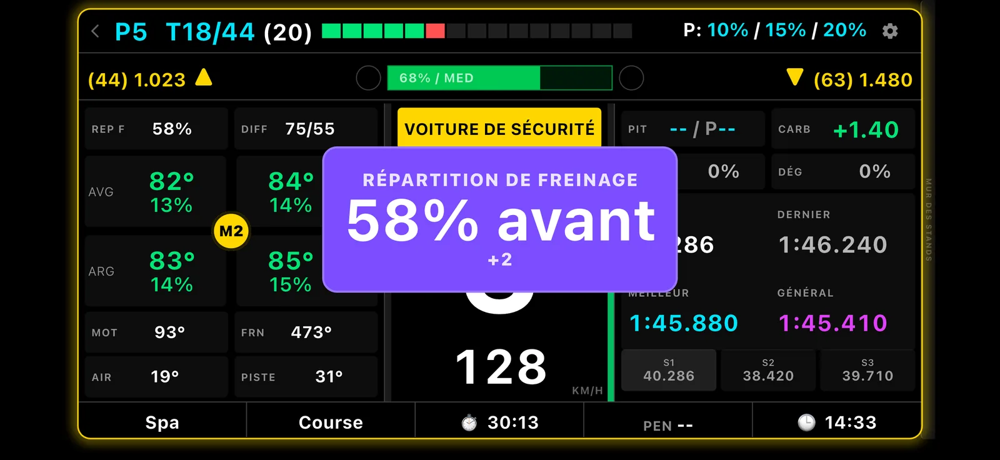
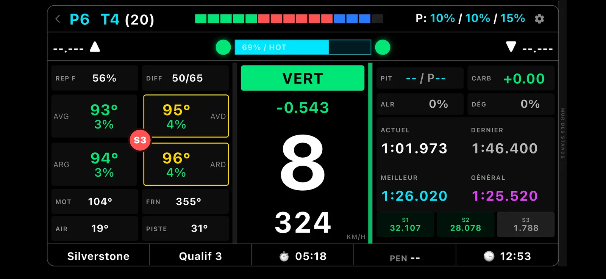

Comment ça marche
Le tableau de bord en direct
Lisez le tableau de bord d’un coup d’œil, ouvrez le tracé en direct plein écran d’une seule touche et passez au mur des stands par la barre de droite.
Votre course d’un coup d’œil
Ouvrez le Tableau de bord depuis l’écran d’accueil. Il passe en paysage et attend la télémétrie de votre jeu, puis se remplit dès que les paquets arrivent.
Tout ce qu’il faut en roulant tient sur un seul écran, sans défilement ni menu à ouvrir.
- Barre du haut : votre position, le compteur de tours avec entre parenthèses le nombre de voitures encore en course, les témoins de changement de rapport et la prévision de pluie à 5, 15 et 30 minutes.
- Deuxième rangée : l’écart avec la voiture devant et celle derrière, avec entre les deux le niveau et le mode de votre batterie (ERS). Les écarts restent masqués au premier tour pour ne jamais vous induire en erreur.
- À gauche : la répartition de freinage, le différentiel, les quatre pneus (température et usure, avec le composé au centre), puis les températures moteur, freins, air et piste.
- Au centre : le drapeau, votre delta en direct, le rapport engagé et la vitesse.
- À droite : la fenêtre d’arrêt et le carburant, l’aileron et les dégâts, puis les temps NOW, LAST, BEST et OVERALL et vos trois secteurs.
- Barre du bas : le circuit, la session, l’horloge de session, les pénalités et l’heure.
Les couleurs des secteurs
Chaque secteur est jugé séparément, dès que vous l’avez bouclé.
- Violet : le secteur le plus rapide de la session, tous pilotes confondus.
- Vert : votre meilleur secteur.
- Jaune : bouclé, mais plus lent que votre meilleur.
- Gris : en cours, ou rien à comparer encore.
Une touche pour le tracé en direct plein écran
Touchez le centre du tableau de bord (la colonne du drapeau, du delta, du rapport et de la vitesse) pour ouvrir le tracé en direct en plein écran. Il dessine votre accélérateur, votre frein et votre volant pendant que vous roulez.
Touchez n’importe où sur le tracé pour le fermer et revenir au tableau de bord. Le volant suit la convention de l’app : un virage à gauche fait monter la ligne, un virage à droite la fait descendre.
Touchez la barre de droite pour le mur des stands
Une fine barre MUR DES STANDS longe le bord droit du tableau de bord. Touchez-la : le mur des stands glisse par-dessus le tableau de bord, avec la même session en direct.
Pour revenir, touchez la barre TABLEAU DE BORD sur le bord gauche du mur des stands, ou sa flèche de retour. Dans les deux sens, c’est une touche : aucun balayage à déclencher par erreur.
En essais et en qualification, le mur des stands s’ouvre aussi tout seul quand votre voiture est dans son stand.

Abréviations et paramètres
Touchez la prévision de pluie dans la barre du haut pour ouvrir la légende du tableau de bord, qui explique chaque abréviation (BB, DIFF, PEN, SC, VSC, ERS et plus). Le même Guide du tableau de bord se trouve dans Paramètres → ASSISTANCE.
L’engrenage en haut à droite ouvre les Paramètres sans quitter la session : la télémétrie, l’enregistrement et Jax continuent pendant que vous changez un réglage.
Direction de course : le cadre lumineux
Quand la direction de course intervient, le cadre du tableau de bord change de couleur : la situation se lit du coin de l’œil. Le cadre du mur des stands fait de même.
- Jaune, pulsé : voiture de sécurité virtuelle.
- Jaune, fixe : voiture de sécurité. Il pulse de nouveau quand la voiture de sécurité rentre ce tour-ci.
- Rouge : drapeau rouge. Il passe avant tout le reste.
- Bleu : on vous présente le drapeau bleu. Après une voiture de sécurité, le bleu ne revient que si le drapeau est toujours présenté.
- Aucune lueur : course sous drapeau vert.
Si l’option Réduire les animations d’iOS est activée, la lueur reste fixe au lieu de pulser.
Une seule fenêtre pour la direction de course
Chaque message de la direction de course apparaît dans la même fenêtre, au même endroit, en quelques mots : DRAPEAU ROUGE, DELTA SC, RECOLLEZ À LA FILE, SC RENTRE CE TOUR, VSC · TENEZ LE DELTA, FIN DU VSC, DRAPEAU VERT et DRAPEAU BLEU.
Sous voiture de sécurité ou VSC, la fenêtre du delta affiche votre marge par rapport au delta exigé et change de couleur avec elle : vert pour OK, jaune pour ATTENTION, rouge pour RALENTISSEZ.
Répartition de freinage et différentiel
Quand vous modifiez la répartition de freinage, le différentiel (à l’accélération ou au lever de pied) ou le frein moteur au volant, la nouvelle valeur s’affiche dans une fenêtre indigo avec l’ampleur du changement, par exemple « 58 % avant, +2 ». L’indigo ne signifie rien d’autre dans JMD : un changement de réglage ne se confond jamais avec la direction de course.
Sous voiture de sécurité ou VSC, la fenêtre du réglage recouvre celle de la direction de course pendant 2 secondes au plus, puis celle-ci revient. Plusieurs changements rapprochés donnent une seule fenêtre avec la dernière valeur. Les changements faits au garage ou dans la voie des stands ne s’affichent pas.

Qualification et essais
La même disposition sert dans tous les types de session. En qualification, les temps au tour et les couleurs de secteur deviennent le cœur de l’écran.

Gratuit et Jax Pro
Tout ce que décrit ce guide est gratuit. Aucun abonnement n’est nécessaire.